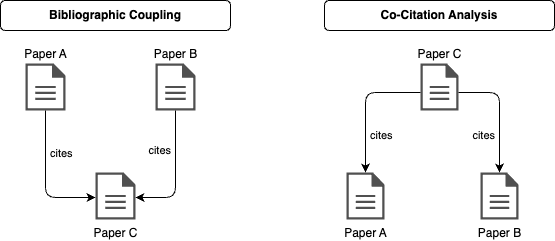

The Hybrid Recommender involves a Citation Recommender that combines global document characteristics and citation-based features of papers, and a Language Recommender that employs a language model to generate embeddings from paper abstracts.
The hybrid recommender combines the Citation Recommender and the Language Recommender in a cascade fashion, i.e. one is used to generate a candidate list which is then re-ranked by the other recommender.
The candidate lists and final rankings of both hybrid orderings are evaluated using the Mean Average Precision (MAP) metric. The objectives of the evaluation are:
Identify the best feature weights for the Citation Recommender.
Identify the best language model for the Language Recommender.
Assess whether the hybridization ordering, i.e. if the Citation or the Language Recommender is applied first, influences the Hybrid Recommender's performance.
The Citation Recommender uses three global document features and two citation-based features:
Global Document Features
These features are derived from the document metadata:
Publication Date:
A novelty metric. Recent publications score higher, as they build upon earlier papers and compare their findings with existing results.
Paper Citation Count:
A document popularity metric. Papers with more citations are, on average and without any prior knowledge, considered more valuable and relevant.
Author Citation Count:
An author popularity metric. Authors with higher total citations across their publications are deemed more important in the research community.
Citation-Based Features
Co-Citation Analysis:
Counts the number of shared citations, which in this context is equivalent to shared citing papers. These are papers that themselves cite both the query and the candidate paper. Candidate documents with higher co-citation analysis scores are considered more relevant to the query document.
Bibliographic Coupling:
Counts the number of shared references or shared cited papers, i.e. papers that appear in the bibliography of both the query and the candidate paper. Candidate documents with higher bibliographic coupling scores are considered more relevant to the query document.

Left: Bibliographic coupling counts the number of shared references. Paper A and Paper B are connected by bibliographic coupling since they both cite the same Paper C. Right: Co-citation analysis counts the number of shared citing papers. Here, Paper A and Paper B are connected by co-citation analysis since they are both cited by Paper C.
Feature Weighting
The five features of the Citation Recommender are combined linearly with user-specified feature weights. The weights are normalized with the L1 norm, ensuring the results are not affected by the absolute magnitude of the weights.
A caveat of this approach is that the raw feature values, such as the publication date (represented as a date) and the paper citation count (an integer), are not directly comparable.
To aggregate all five features into a single score, a rank-based method is used.
The Citation Recommender first ranks all candidate papers according to each of the five features individually.
The ranking process assigns the top rank 1 to the most relevant candidate paper and increments the rank by 1 for each subsequent paper.
Candidate papers with more recent publication dates, higher citation counts, higher co-citation analysis and higher bibliographic coupling scores receive better rankings.
Finally, those candidate papers with the lowest weighted rank are recommended to the user.
Note: The true weighting scheme involves some additional steps that add interpretability but are conceptually equivalent to the version described above. See chapter 3.3 of the thesis for more details.
The Language Recommender encodes paper abstracts into embedding vectors to capture semantic meaning. Candidate papers with embeddings most similar to the query embedding (measured by cosine similarity) are recommended.
8 language models across 3 categories are implemented: keyword-based sparse embedding models, static embedding models, and contextual embedding models.
Keyword-based models
They produce sparse vector embeddings where the embedding dimension equals the vocabulary size of all document abstracts in the training corpus.
For these models, text preprocessing and tokenization is performed by the spaCy library using the en_core_web_sm model.
The following keyword-based models are considered:
\(\text{BM25-TF}(t, d)\) is the BM25+ term frequency of token \(t\) in document \(d\),
\(\text{BM25-IDF}(t)\) is the BM25+ inverse document frequency of token \(t\) across all documents in the training corpus,
\(\text{TF}(t, d)\) is the term frequency of token \(t\) in document \(d\) (interpreted as the relative frequency of a term in a document),
\(\text{DF}(t)\) is the document frequency of token \(t\) (the number of documents in the corpus that contain the term \(t\)),
\(\text{len}(d)\) is the total number of tokens in document \(d\),
\(\text{avgdl}\) is the average document length across the corpus,
\(N\) is the total number of documents in the corpus,
\(k\), \(b\), and \(\delta\) are free parameters.
Default values of \(k = 1.5\), \(b = 0.75\), and \(\delta = 1.0\) are adapted from the rank_bm25 package.
Static embedding models
They produce dense vector embeddings where the embedding dimension is fixed (here set to the default of 300) and independent of the vocabulary size.
Word embeddings are averaged dimension-wise to obtain a single embedding vector for each abstract.
Again, spaCy is used for text preprocessing and tokenization.
All three static embedding models are pretrained and implemented via their gensim interface:
Word2Vec: Pretrained on the Google News corpus using the word2vec-google-news-300 gensim model.
GloVe: Pretrained on the Gigaword corpus and Wikipedia using the glove.6B.300d model from the NLP Stanford GloVe project.
FastText: Pretrained on the Common Crawl corpus and Wikipedia using the cc.en.300.bin model from the FastText Website.
Contextual embedding models
Similar to static embedding models, they produce dense vector embeddings where the embedding dimension is fixed (here set to the default of 768) and independent of the vocabulary size.
Instead of string tokens, contextual embedding models take integer token IDs as input which are mapped to words and subwords and learned during pretraining.
All three static embedding models are pretrained and implemented via the HuggingFace transformers library:
BERT: Pretrained on the BooksCorpus and English Wikipedia using the bert-base-uncased model.
SciBERT: Pretrained on the Semantic Scholar corpus (i.e. specific to scientific language) using the allenai/scibert_scivocab_uncased model.
Longformer: Pretrained on the BooksCorpus and English Wikipedia using the allenai/longformer-base-4096 model.
Instead of averaging word embeddings like static embedding models, these Transformer based models cut off the document abstracts at a maximum token length of 512 for BERT and SciBERT and 4096 for the Longformer model.
However, only 0.58% of all abstracts in the training corpus exceed the maximum token length of 512 such that the impact of this cutoff is negligible.
To determine whether the Hybrid Recommender generates relevant or irrelevant recommendations, arXiV categories are used as labels.
Within the Computer Science domain there are 40 different arXiV categories, such as cs.AI for Artificial Intelligence or cs.CL for Computation and Language.
Importantly, each paper is not constrained to a single category but can be assigned to multiple categories.
Based on these labels, a binary classification task is defined: A candidate paper is considered a relevant recommendation if it shares at least one arXiV label with the query paper, and irrelevant otherwise.
For instance, if the query paper is assigned to the cs.CL and cs.IR categories, the candidate paper BERT: Pre-training of Deep Bidirectional Transformers for Language Understanding by Devlin et al. (2018) is considered a relevant recommendation because it is assigned to the cs.CL category. Hence, there is an overlap between the query and candidate paper's arXiV labels.
In contrast, the candidate paper Deep Residual Learning for Image Recognition by He et al. (2016) is considered an irrelevant recommendation because it is only assigned to the cs.CV category, which does not overlap with any of the query paper's categories.
The Mean Average Precision (MAP) is used as the primary evaluation metric to assess the performance of the Hybrid Recommender.
Although many evaluation metrics are available for recommender systems, the MAP is chosen due to the following reasons:
It takes the order of recommendations into account, i.e. it is not only important to recommend relevant items but also to recommend them early in the list.
All items on the recommendation list are considered, i.e. it is not only important to recommend relevant items but also to avoid irrelevant items.
It works well with binary 0/1 encoded labels as in our case for irrelevant/relevant recommendations.
The Average Precision (AP) computes a scalar score for a single recommendation list according to the following definitions:
Precision
\[\text{Precision} = \frac{\text{number of relevant items}}{\text{number of items}}\]
The Mean Average Precision is then computed as the average over the Average Precision scores for the recommendations of all query documents in the training corpus.
\(\text{AP}(q)\) is the average precision for query document \(q\).
Within this project, the MAP computes a scalar score for a given combination of Language Model Choice and Feature Weights.
Thus, to determine which Recommender order works best within the Hybrid structure, we could e.g. aggregate the MAP scores for each order over all Language Model Choices and Feature Weights.
Example
The recommendation list [relevant, irrelvant, relevant] has a Precision of \(P = \frac{2}{3}\) and an Average Precision of \(AP = \frac{1}{2} \cdot (\frac{1}{1} + \frac{2}{3}) = \frac{5}{6}\).
The recommendation list [relevant, relevant, irrelevant] has a Precision of \(P = \frac{2}{3}\) and an Average Precision of \(AP = \frac{1}{2} \cdot (\frac{1}{1} + \frac{2}{2}) = 1\).
The MAP of these two rankings is \(MAP = \frac{1}{2} \cdot (\frac{5}{6} + 1) = \frac{11}{12}\).